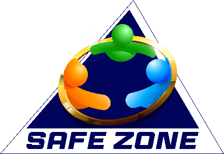
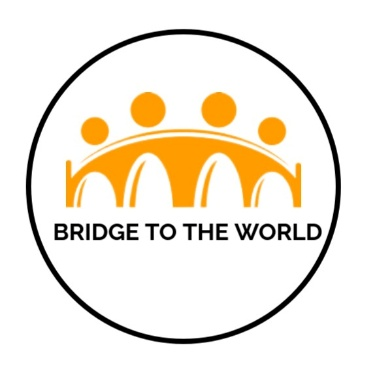
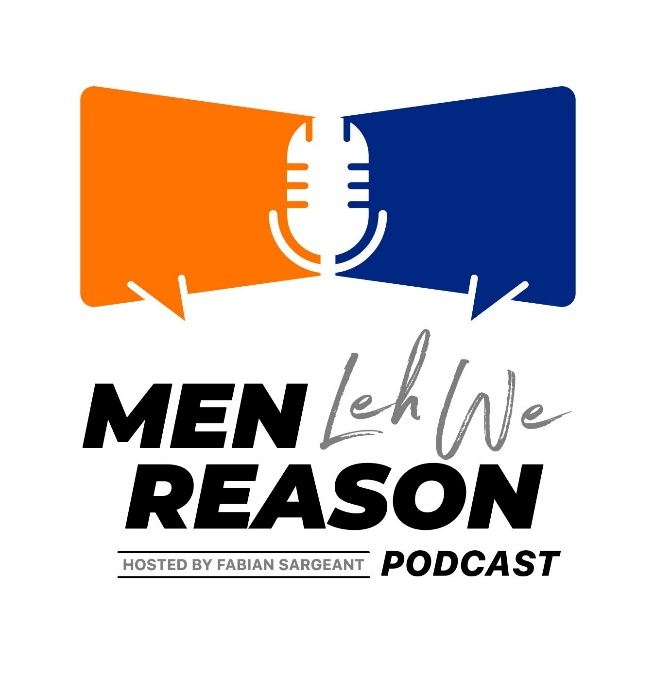
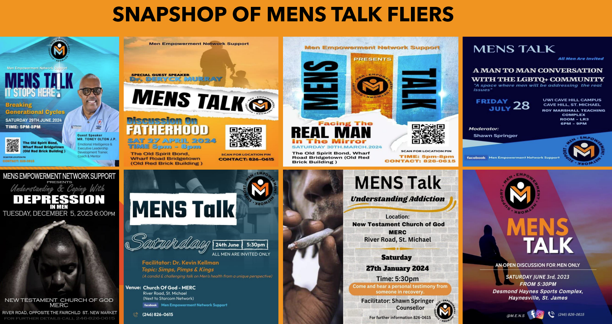
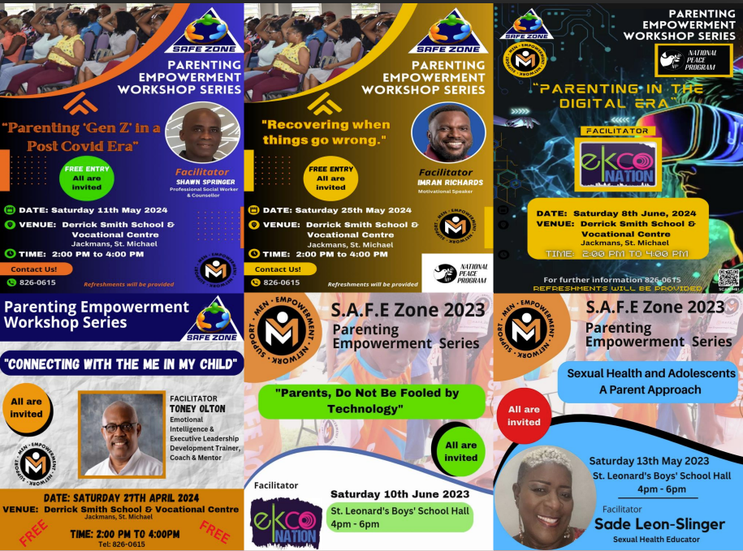
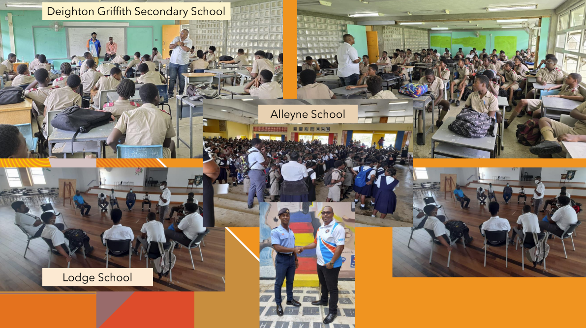

SAFE Zone
10-week mentorship and life-skills programme for boys 12–18.
Practical, research-informed initiatives supporting men and boys through mentorship, emotional development, employability, parenting, and community care.
Explore the ProgrammesM.E.N.S develops programmes in response to the social, emotional, and psychological realities affecting men and boys in Barbados. From flagship support groups to adolescent mentorship and career readiness, each initiative is designed to create practical change.

10-week mentorship and life-skills programme for boys 12–18.

Six-month employability, entrepreneurship, and confidence-building programme.

Podcast and platform for honest public discussion around issues affecting men.
The charity’s flagship programme provides monthly confidential support group meetings where adult men can connect, share experiences, and receive psychosocial and educational support without fear of judgment.
Trusted sessions that have run consistently since 2019, including online support during the COVID-19 period.
Men receive support around emotional health, relationships, accountability, and daily life pressures.
SAFE stands for “Shaping Adolescents to Function in their Environment.” This 10-week programme for boys ages 12–18 promotes behavioural change through life skills, emotional intelligence, mentorship, and access to support services.
Focus areas include self-awareness, self-management, social awareness, relationship skills, and responsible decision-making.
Positive male role models, counselling access, and parenting resources help create a stronger support ecosystem around each boy.
This six-month professional development programme supports adolescents ages 15–19 who left the educational system without formal qualifications and need structured guidance into the world of work and entrepreneurship.
Participants build communication, conflict management, interpersonal, and career planning skills for long-term success.
The programme also develops entrepreneurial readiness while strengthening emotional well-being and confidence.
M.E.N.S responds directly to needs in schools and communities across Barbados through male mentorship, parenting support, and social assistance programmes designed to meet men and families where they are.
Critical mentorship and male guidance for boys in schools facing increased deviance and social pressures.
Workshops and outreach efforts equip parents and communities with practical support and responsive intervention.
Monthly men-only psychosocial and educational support group.
Adolescent boys development and mentorship initiative.
Podcast and discussion platform for men’s issues and public dialogue.
Workshop series providing guidance and tools for parents.
In-school mentorship, advice, and engagement for boys.
Social assistance and empowerment initiatives across communities.



M.E.N.S serves men and boys at different life stages, including adolescent boys, young men transitioning into employment, fathers, and adult men seeking support, mentoring, and community.
All programmes are anchored in the SEA approach: Support, Education, and Advocacy. This shapes how M.E.N.S responds to emotional, social, and developmental needs.
Yes. Mentorship and access to supportive counselling pathways are core elements across several initiatives, especially SAFE Zone, MENS Talk, and development-focused outreach work.
Schools, parents, community leaders, and partner organisations can contact M.E.N.S to discuss outreach sessions, workshops, programme collaboration, and support needs.
Help us expand safe spaces, mentoring, outreach, and empowerment programmes for men and boys across Barbados.